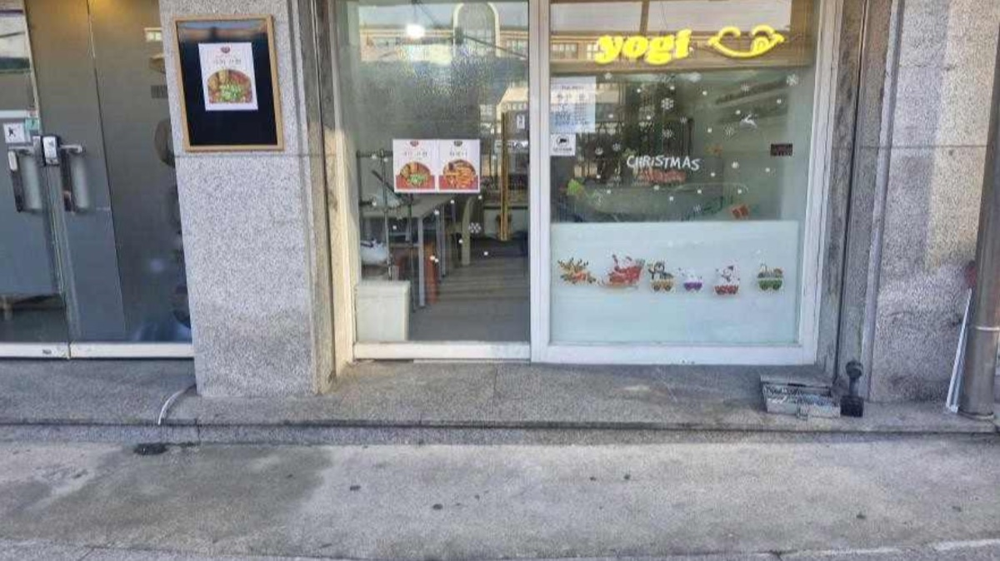
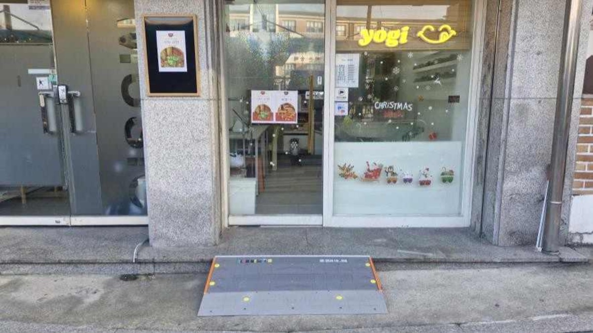

무턱대고 턱을 없앱니다.

청년 사회혁신 프로젝트
모든 바퀴가
환영받는 동네를 만듭니다
계단 한 칸 앞에서 발걸음을 돌리는 사람들이 있습니다.
무턱대고는 가게 앞 그 한 칸을 직접 없앱니다.
- 설치 경사로
- 0+
- 활동 지역
- 0+
- 함께한 봉사자
- 0+


스크롤해 보세요
딱 한 칸.
그런데 못 넘습니다.
그래서 경사로를 놓습니다.
왜 턱을 없애야 할까요?
계단 하나가 문 하나를
닫습니다
대한민국 소규모 매장의 77.1%는 경사로가 없거나 바퀴가 출입하기 어려운 구조입니다.
5cm 높이의 턱 때문에 발길을 돌리는 사람들이 있습니다.
-
약 20만 명
휠체어 이용자
입구의 작은 턱 하나로 가게 안에 들어가는 선택 자체가 사라질 수 있습니다.
-
약 1,112만 명
노인·어르신
낮은 단차도 보행이 불편한 이웃에게는 넘어짐 위험이 될 수 있습니다.
-
누구나
일시적 이동약자
유아차, 임신, 골절, 무거운 짐처럼 우리 모두에게 경사로가 필요한 순간이 옵니다.
설치 전후 기록
경사로 하나하나가
누군가의 이야기입니다
- 0+
- 설치 경사로
- 0+
- 활동 지역
- 0+
- 함께한 봉사자
드래그해서 직접 비교해보세요 스크롤하면 다음 가게로 넘어가요
점주 인터뷰